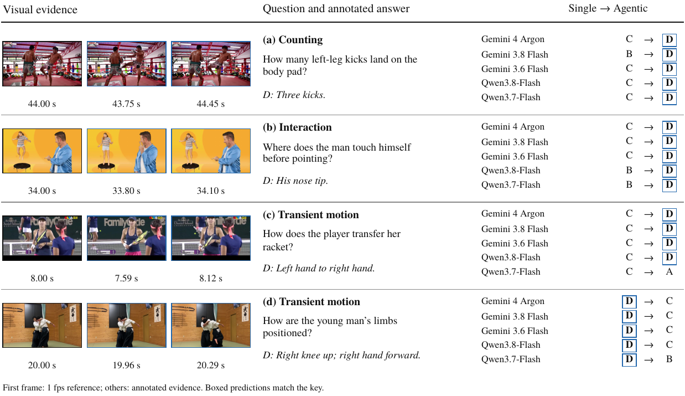

VideoACE: Benchmarking Agentic Video Understanding through High-Frame-Rate Actions VideoACE：面向高帧率细粒度动作的智能体视频理解基准
1,000 fine-grained action questions over 24 fps videos paired with video inspection tools and a leakage-screened User Simulator for sustained interactive evaluation.
基于 24 fps 高帧率动作视频构建 1,000 道细粒度问答，结合视频观测工具与防泄露用户模拟器，系统评估模型在持续交互中的证据获取与修正能力。

Abstract摘要
Agentic video understanding requires models to actively interact with video environments to gather evidence and form judgments. We introduce VideoACE, a benchmark focused on high-frame-rate action videos where rapid, subtle changes make targeted observation especially valuable. VideoACE comprises 1,000 multiple-choice questions across six categories of fine-grained action understanding over 100 videos retained at 24 fps, accompanied by temporal evidence annotations (median duration 0.90 s) and user hints screened for answer leakage.
Its evaluation environment combines video inspection tools with a User Simulator, enabling models to adjust temporal coverage, sampling density, and spatial detail, and to revisit evidence under simulated feedback. Across single-pass observation, autonomous tool use, and tool use with user feedback, evaluating five frontier models reveals sharp differences in how effectively they exploit interaction opportunities.
智能体视频理解要求模型主动与视频环境交互以收集证据并修正判断。我们提出 VideoACE 基准，聚焦高帧率细粒度动作场景（100 段 24 fps 视频、1,000 道选择题、覆盖六类细粒度动作，关键证据中位时长 0.90 秒），配套视频观测工具与经防泄露筛查的用户模拟器，系统对比单次观测、自主工具调用与结合用户反馈三种模式下的模型表现。
Main Benchmark Results主榜实验结果
All five models complete all 1,000 questions across single-pass, autonomous tool use, and tool use with simulated user feedback.
全部五个模型在 1,000 道题上完成单次观测、自主工具调用以及结合用户反馈三种评测设置。
| Model | Single-Pass (%) | Autonomous Tool Use (%) | Tool Gain | With Feedback (Final %) | Feedback Gain |
|---|---|---|---|---|---|
| Gemini 4 Argon | 80.8 | 88.1 | +7.3 | 87.1 | +2.3 |
| Gemini 3.8 Flash | 75.4 | 86.4 | +11.0 | 83.5 | +3.2 |
| Gemini 3.6 Flash | 65.6 | 79.8 | +14.2 | 78.0 | +5.0 |
| Qwen3.8-Flash | 63.5 | 76.2 | +12.7 | 73.2 | +4.8 |
| Qwen3.7-Flash | 56.3 | 59.3 | +3.0 | 60.3 | +8.8 |
Qualitative Successes & Regressions典型成功与退化案例
